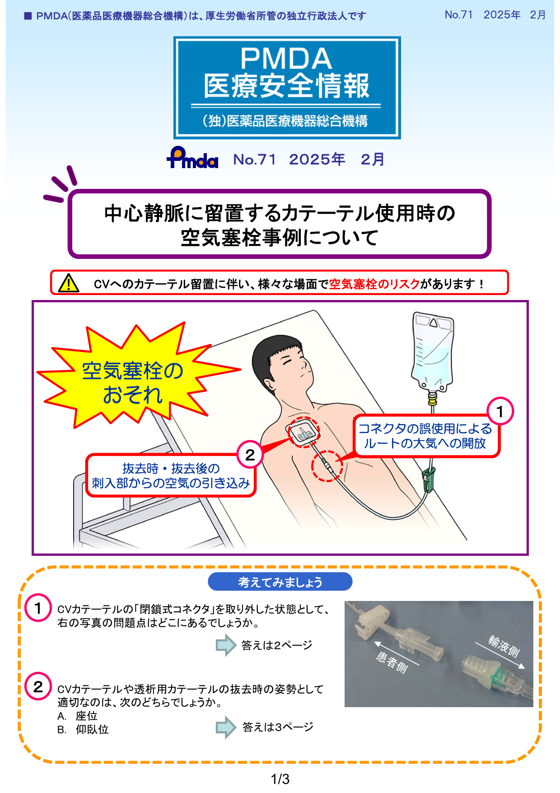
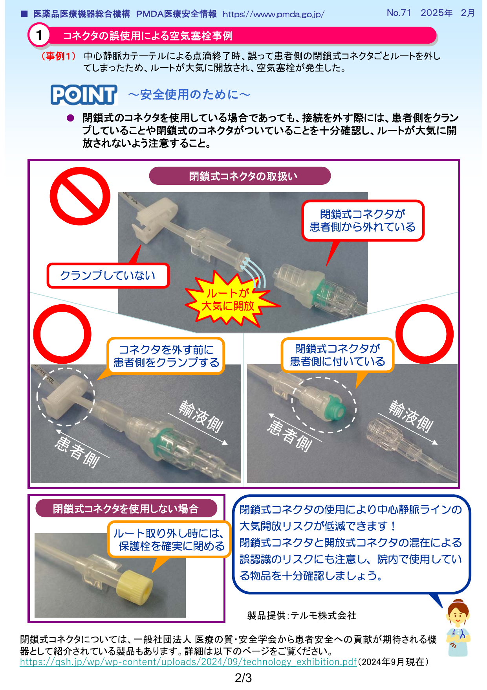
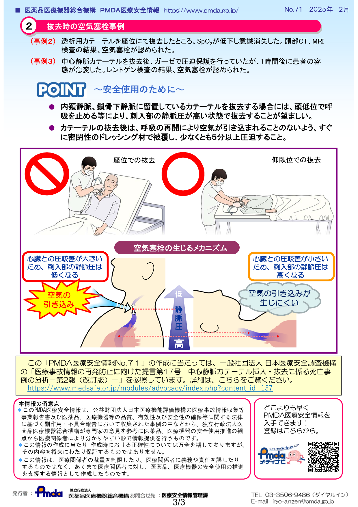

本ページは学習用の参考資料です
内容は概要的・教育目的のため、診療判断には必ず最新ガイドライン・原著論文などの一次情報をご確認ください。誤りや古い記載を見つけた場合は指導医にご相談ください。
1. なぜCV抜去は侮ってはいけないのか
中心静脈カテーテル(CVC)の抜去は「ただ引き抜くだけ」に見えますが、実は致死的合併症(空気塞栓)を起こしうる手技です。挿入時の合併症ばかりが注目されますが、抜去時こそ油断しないことが重要です。
⚠ 最重要: CV抜去時に最も警戒すべき合併症は空気塞栓(air embolism)。発症すれば数十秒で循環虚脱・心停止に至る可能性があります。
報告されている死亡例の典型像
- 座位またはfowler位で抜去 → 直後に呼吸困難・意識消失
- 抜去部位を圧迫せず、開放のまま離床 → 数分後に虚脱
- 抜去後 閉塞性ドレッシングをせず、数時間後に塞栓症状(遅発性)
2. 空気塞栓のメカニズム
身体の中で陰圧になる部位を理解することが、CV抜去の安全管理のすべての土台です。
「胸腔内陰圧」の生理
正常では胸腔内圧は常に大気圧より低い:
- 安静呼気時: 約 −5 cmH₂O
- 安静吸気時: 約 −8 cmH₂O
- 深吸気/努力吸気時: −20〜−40 cmH₂O
この陰圧で肺が膨らみ、同時に胸腔内の静脈(上大静脈・右房)も陰圧化します。これが「胸腔吸引作用(thoracic suction)」と呼ばれ、静脈還流を促進する正常な生理です。
抜去時に空気が引き込まれる条件
- カテーテルが抜けても、皮膚→静脈までの瘻孔(tract)がしばらく残る(特に長期留置例)
- その瘻孔の遠位端が胸腔内の陰圧静脈系に通じている
- 患者が吸気すると、胸腔内陰圧 → 静脈陰圧 → 瘻孔から空気が吸い込まれる
- 50 mL以上の空気が右心系に入ると致死的(諸説あるが10-20 mL/秒の流入で危険)
💡 ポイント: 「水は高い方から低い方へ」と同じく、空気も陽圧から陰圧へ流れます。胸腔内が陰圧 = 外気が引き込まれる吸引装置になります。
3. 安全な抜去手技
抜去前の準備
- 凝固機能の確認(PT-INR、血小板)— 抗凝固薬服用中なら適切な休薬・対策
- カテーテルの種類・長さ・留置日数を確認
- 必要物品: 滅菌手袋、ガーゼ、消毒液、ワセリンガーゼ + フィルムドレッシング(閉塞性)、縫合糸抜去用器材
手順(7ステップ)
- 体位: 仰臥位(supine)、必要ならTrendelenburg位(頭低位)。座位・Fowler位は禁忌
- 説明: 抜去のタイミングで「息を止めてください」または「ハミングしてください」と指示できるよう事前説明
- 消毒・固定具の除去: 縫合糸を切除、皮膚消毒
- 呼気停止/Valsalva: 患者に息こらえ(息を吐いてから止める)またはハミングを指示(吸気陰圧を作らせない)
- 抜去: ゆっくり一定速度で引き抜く。先端の破損・遺残がないことを確認
- 即時圧迫: 抜去部を清潔ガーゼで5〜10分以上圧迫止血
- 閉塞性ドレッシング: ワセリンガーゼ + 透明フィルムで気密シール。最低24時間継続(72時間が安全)
抜去後の管理
- 30分間は仰臥位安静(立位は陰圧を増強する)
- バイタル監視、呼吸困難・胸痛・神経症状の有無を観察
- カテーテル先端の培養提出(感染疑い時)
📌 重要な質問: 「なぜハミングが有効?」 → 声帯閉鎖により胸腔内圧が陽圧化または0付近に保たれ、吸気陰圧の発生を防ぐため。Valsalva(息こらえ + いきみ)も同じ原理。
4. 合併症と対応
| 合併症 | 機序 | 対応 |
|---|---|---|
| 空気塞栓 致死的 |
抜去部から胸腔内陰圧で空気引き込み | 即座に左側臥位 + Trendelenburg(空気を右室外側に閉じ込める)、100%酸素、ICU管理。重症ではHBO(高気圧酸素)考慮 |
| 出血・血腫 | 抗凝固、血小板減少、太い血管(IJV, SCV) | 圧迫止血5〜10分。改善なければ凝固補正 |
| カテーテル断裂・遺残 | 長期留置でカテーテル劣化、無理な牽引 | 抜去後に先端確認。遺残疑いはX線/CT。IVRで回収 |
| カテーテル関連感染(CRBSI) | カテーテル定着菌が血流播種 | 抜去後 先端培養 + 血培2セット。経過観察 → 抗菌薬 |
| 血栓飛散 | カテーテル周囲血栓が抜去で剥離 | 事前にエコーで血栓評価。大血栓あれば抜去回避 or IVR連携 |
5. 実際の事故事例 ― PMDA医療安全情報 No.71
独立行政法人 医薬品医療機器総合機構(PMDA)が 2025年2月 に公表した医療安全情報 No.71「中心静脈に留置するカテーテル使用時の空気塞栓事例について」では、CV関連の空気塞栓を 2つの場面 に分けて警告しています。
⚠ PMDA警告の2つの場面:
- コネクタの誤使用によるルートの大気開放(留置中の事故)
- 抜去時・抜去後の刺入部からの空気引き込み(本ページの主題)
報告された3つの事例
事例 1 ― コネクタ誤使用
閉鎖式コネクタごと外してしまったケース
中心静脈カテーテルによる点滴終了時、誤って患者側の閉鎖式コネクタごとルートを外してしまった結果、ルートが大気に開放され、空気塞栓が発生した。
📌 学び: 閉鎖式コネクタを使っていても、接続を外す前に必ず 患者側のクランプ と 閉鎖式コネクタの位置 を確認すること。
事例 2 ― 座位での抜去
透析用カテーテルを座位で抜去したケース
透析用カテーテルを座位のままで抜去したところ、SpO₂が低下し意識消失。頭部CT・MRIで空気塞栓が確認された。
📌 学び: 座位では刺入部の静脈圧が大気圧より低くなり、抜去孔から空気が引き込まれる。内頚静脈・鎖骨下静脈のカテーテルは 頭低位 + 呼吸停止 で抜去する。
事例 3 ― 抜去後の容態急変
抜去後 ガーゼ圧迫のみで遅発性に容態急変したケース
中心静脈カテーテル抜去後、ガーゼで圧迫保護を行っていたが、1時間後に患者の容態が急変。レントゲン検査で空気塞栓が確認された。
📌 学び: 通常のガーゼでは気密性がなく、瘻孔が閉じる前に呼吸サイクルで空気が引き込まれる。抜去直後に 密閉性のドレッシング材で被覆 + 5分以上圧迫 が必須。
PMDA医療安全情報 No.71(原本)
下記の画像は PMDA が公表しているポスターの原本です。クリックすると拡大表示されます。



💡 機序の補強(PMDA図より): 座位では心臓と刺入部の圧較差が大きく、刺入部の静脈圧が低くなる。仰臥位・頭低位では圧較差が小さくなり静脈圧が高く保たれるため、空気が引き込まれにくい。
📖 出典: 独立行政法人 医薬品医療機器総合機構(PMDA)
PMDA医療安全情報 No.71「中心静脈に留置するカテーテル使用時の空気塞栓事例について」 2025年2月
https://www.pmda.go.jp/
※ PMDA医療安全情報は厚生労働省所管の独立行政法人により公表されている公的な医療安全情報資料です。本ページの作成にあたり原本を引用しています。
関連: 日本医療安全調査機構「医療事故情報の再発防止に向けた提言 第17号 中心静脈カテーテル挿入・抜去に係る死亡事例の分析(改訂版)」
https://www.medsafe.or.jp/
PMDA医療安全情報 No.71「中心静脈に留置するカテーテル使用時の空気塞栓事例について」 2025年2月
https://www.pmda.go.jp/
※ PMDA医療安全情報は厚生労働省所管の独立行政法人により公表されている公的な医療安全情報資料です。本ページの作成にあたり原本を引用しています。
関連: 日本医療安全調査機構「医療事故情報の再発防止に向けた提言 第17号 中心静脈カテーテル挿入・抜去に係る死亡事例の分析(改訂版)」
https://www.medsafe.or.jp/
6. CV抜去前 セルフチェックリスト
抜去前にすべて確認してから手技を開始してください。
7. 理解度チェック(全7問)
問題 1 / 7
得点: 0 / 0
最終得点
0 / 7
8. 用語集
| 用語 | 意味 |
|---|---|
| CVC | Central Venous Catheter(中心静脈カテーテル) |
| Air embolism | 空気塞栓症。50mL以上で致死的 |
| Valsalva maneuver | 声門閉鎖下にいきむ。胸腔内圧を陽圧化 |
| Trendelenburg位 | 頭低位。下肢側を高くする体位 |
| Occlusive dressing | 閉塞性ドレッシング。気密性のあるドレッシング(ワセリンガーゼ+フィルム) |
| CRBSI | Catheter-Related Bloodstream Infection(カテーテル関連血流感染) |
| 胸腔内陰圧 | 呼吸サイクル中、常に大気圧より低い圧。吸気時さらに低下 |